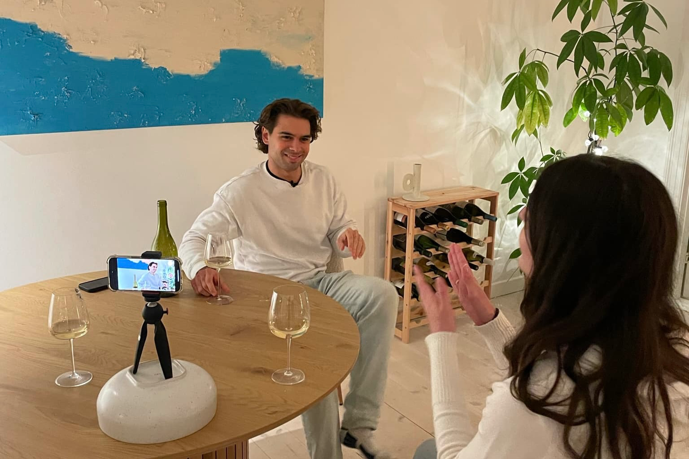
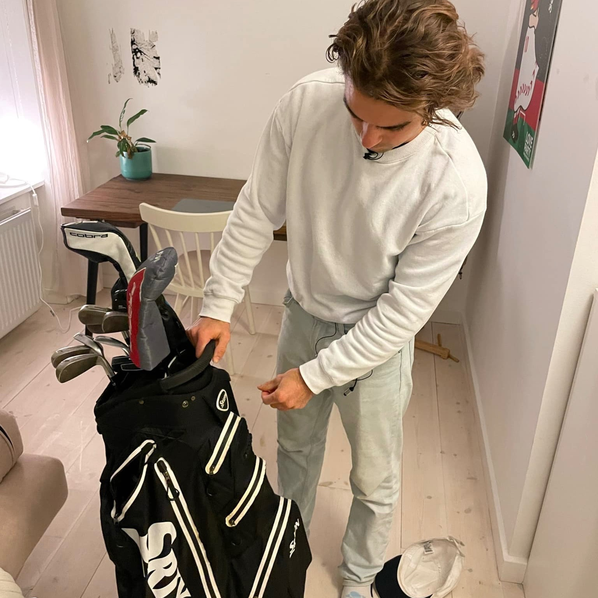
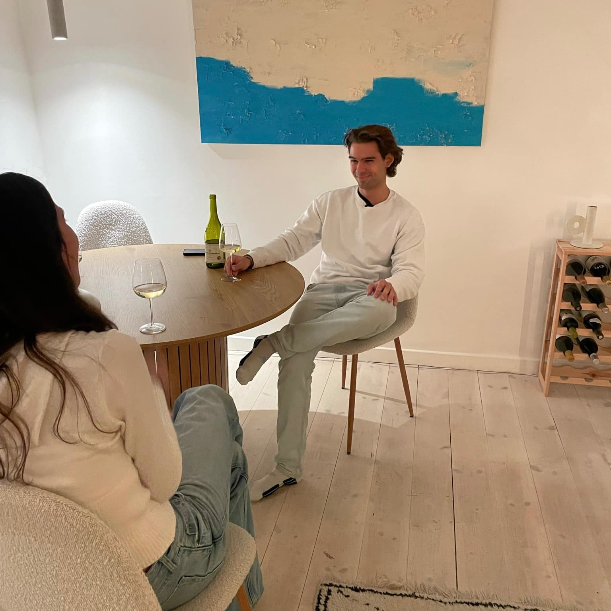
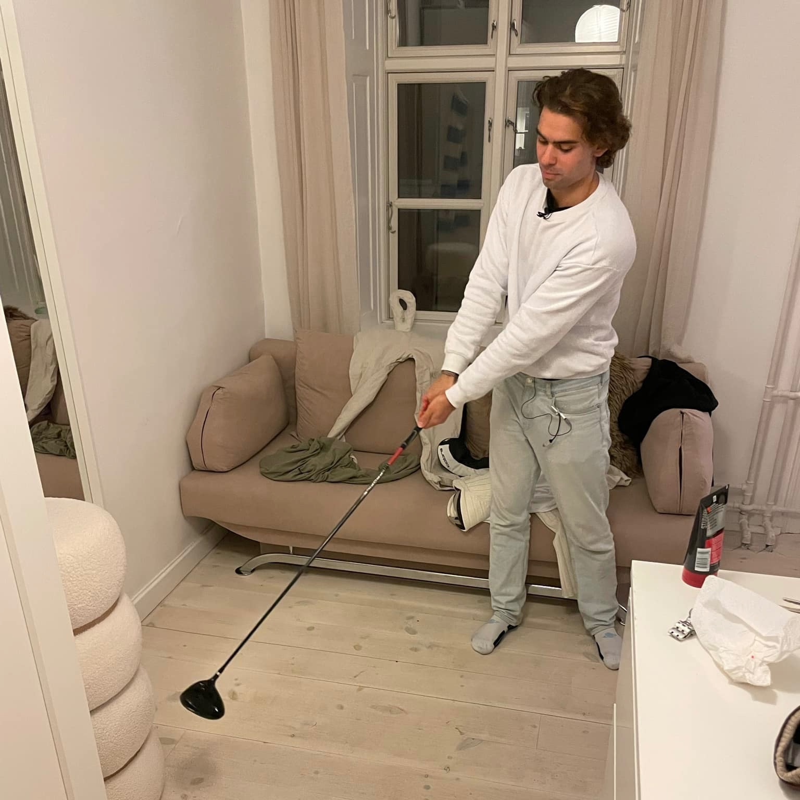
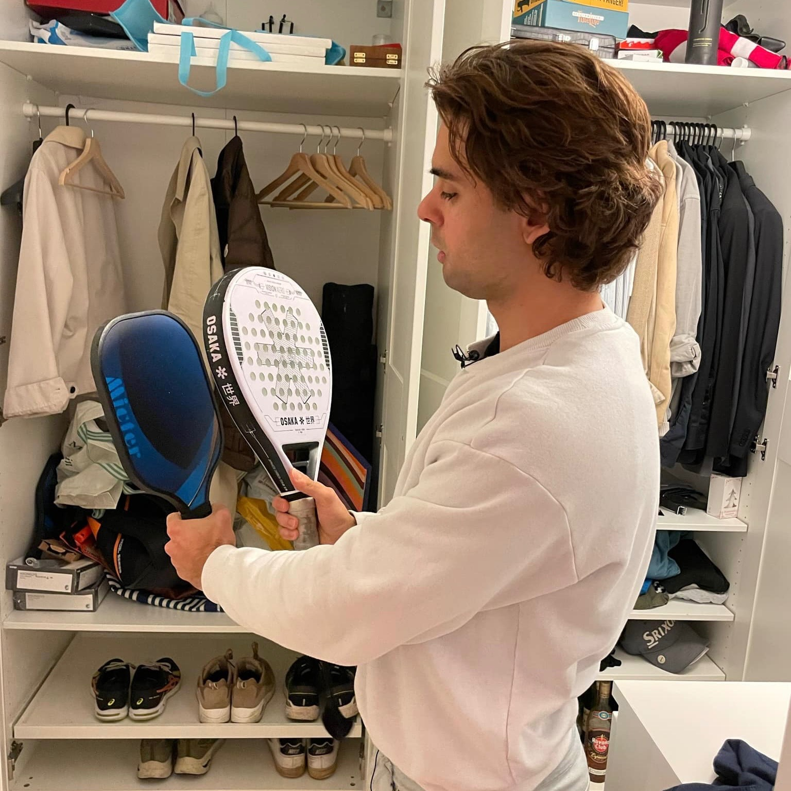
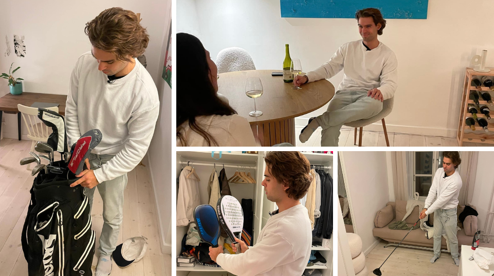

Passionssite
Lucas Samsø
Lucas Samsø er 24 år og fuld af energi – og passioner! Han brænder for alt fra padeltennis og pickleball til golf. En ting er sikkert: Han går aldrig ned på ambitioner eller godt humør. Vil du lære ham bedre at kende? Tjek videoen længere nede på siden, hvor han selv fortæller sin historie.

Galleri




